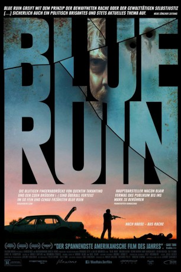

#3455 Blue Ruin
 
 IMDB-Wertung: 7.1 / 10
IMDB-Wertung: 7.1 / 10  Metascore: 0
Metascore: 0 
Der seltsame Dwight ist ein am Strand lebender Rumtreiber. Nachts bricht er in Häuser ein, deren Besitzer sich im Urlaub befinden. Hier schläft er und sucht im Abfall nach Essensresten. Die meiste Zeit verbringt er jedoch in einem kaputten, rostigen Auto. Auch wenn es das Leben nicht ganz so gut mit dem Landstreicher meint, ist es ein einfaches Leben, mit dem sich Dwight arrangiert hat. Doch dann findet er heraus, dass der Mann, der seine Eltern einst ermordete, aus dem Gefängnis entlassen wird. Dwight packt der unwiderstehliche Drang, erduldetes Unrecht auszugleichen und Vergeltung zu üben. Er entfesselt eine Welle der Gewalt, die er bald nicht mehr unter Kontrolle hat.
Jahr: 2013
Dauer: 90 Minuten
FSK: 16
Land: USA Studio: RADiUS-TWCTonspuren: DTS - ,
Untertitel: Deutsch,
Auflösung: 1080p (1920x804) Größe: 5744 MB
Genre: Thriller, Drama, Krimi
Regisseur: Jeremy Saulnier
Drehbuch: Jean Bernard-Luc
Soundtrack:
Darsteller:
- Macon Blair als Dwight
 Devin Ratray als Ben Gaffney
Devin Ratray als Ben Gaffney- Amy Hargreaves als Sam
- Kevin Kolack als Teddy Cleland
- Eve Plumb als Kris Cleland, Sister
- David W. Thompson als William
- Brent Werzner als Carl Cleland
- Stacy Rock als Hope Cleland, Cousin
- Sidné Anderson als Officer Eddy
- Shelley Illmensee als SUV Driver
 Bonnie Johnson als Margaret Gaffney
Bonnie Johnson als Margaret Gaffney- Ydaiber Orozco als Amanda, Rental Houser Mother
- Obie Sims als Corrections Officer
- Brooke Bennett als Smoking Girl
- Gina Byrne als Triage Nurse
- Ellen Danaher als Pawn Shop Clerk
- Elizabeth Fredericks als Metal Detector Couple
- George Fredericks als Metal Detector Couple
- Abigail Horton als Babysitter
- Daniel L. Kelly als Ketchup Man
- Katie Kramer als Supermarket Cashier
- John D. McKemy als Tractor Trailer Driver
- John Plantz als Pharmacy Clerk
- Adrian Santiago als Daughter #2
- Dani Santiago als Daughter #1
- Ronald Sarcos als Eric, Rental House Father
- Ella Saulnier als Sam's Daughter
- Nielle Saulnier als Sam's Daughter
- Erica Genereux Smith als Rock Girl
Datei: X:\2013(A-F)\Blue Ruin (2013, FSK16, 1920x804).mkv seit 09.04.2016
Festplatte: HD 2012(N-Z)-2013(A-H)
 Es gibt insgesamt 127 Filme in der Gruppe '2013(A-F)'
Es gibt insgesamt 127 Filme in der Gruppe '2013(A-F)'